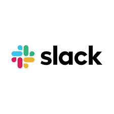

First tool I used was Trello. The benefits of Trello are that it keeps you on track and schedule, you can add tasks from to-do to doing and then done but I added a review list because I had someone overlook my project and give me feedback this is a great benefit because you can add as many lists as you like for whatever tasks you want. The one drawback for Trello is that it can get hard to remember to use all the time and manage it at first but once you get used to it you will remember to fully use it. I could have used trello a bit better by adding deadlines to my tasks because I did not feel like that could have helped me use trello more to its full potential and it also would have kept me on track more, this would have made work so much more efficiently and productively. Another tool I used is Visual Studio Code which is where I wrote the HTML and CSS for my website, the benefits for this is that you can use a lot of languages on this one programme and have them link together. I used Visual Studio Code to write my HTML and CSS and linked them together in one file so that I can preview my website straight away after each change I make or each thing I add. I could have done this project in a team by using Github, if I did this in a team the website could be way more complex than it is because its a team project and there are many ideas that could have been used.
You can organise and plan a project, break a project down into tasks and set them in order with a deadline of when they need to be completed. You can have someone review your project every now and then to give you feedback so you can make changes and add necessary content to your project, this can be done on Trello or anything similar to that or just done on paper and also your phone. Another way to improve efficiency and productivity is by making sure once your project is planned out that you have the right tools and equipment to use for your project so that nothing gets in the way of your project.
Next time if I did this again I could plan it better and do it alot more efficiently because I now have an idea of what to do. When I came into this I was completely new to HTML and CSS so there was a learning curve. Now that I understand it more I could complete the code alot faster maybe make a template of my website and each page of how I would like it to look, then I could dedicate the rest of my time getting and making the content for my website so that I don't have to do everything from scratch every time for each page. If I did this in a team it would also be alot easier because you can have one person work on each thing alone and use github to just update the website after you have completed a task, such as you can have one person doing the HTML another person finding and creating content to be used on the website and one person doing the CSS this could save a lot of time since you can have multiple tasks worked on at once. Slack can be good for this type of project because you can communicate with people about the project or just communicate with team members if you are not kept up to date or maybe just have missed out on something. Slack will also be good for this because you can put your content and code if you don't have github so that you can just take the content from there.
You can start by just doing a basic functionality test by simply checking that everything that you need works properly and how you need it to even things that you don't think that you need but could come into use later you should check them. Then you could have someone else such as a tutor or a peer review the digital solution to see if you have missed anything or if you need help with something and cannot solve it on your own you can check google if you don't have someone to help you, you can even use google to see examples of other digital solutions to compare yours to and give you ideas. Once you are mid project or task and even if you have completed a task you can test for errors or just to see if everything is running smoothly and how you need it to.